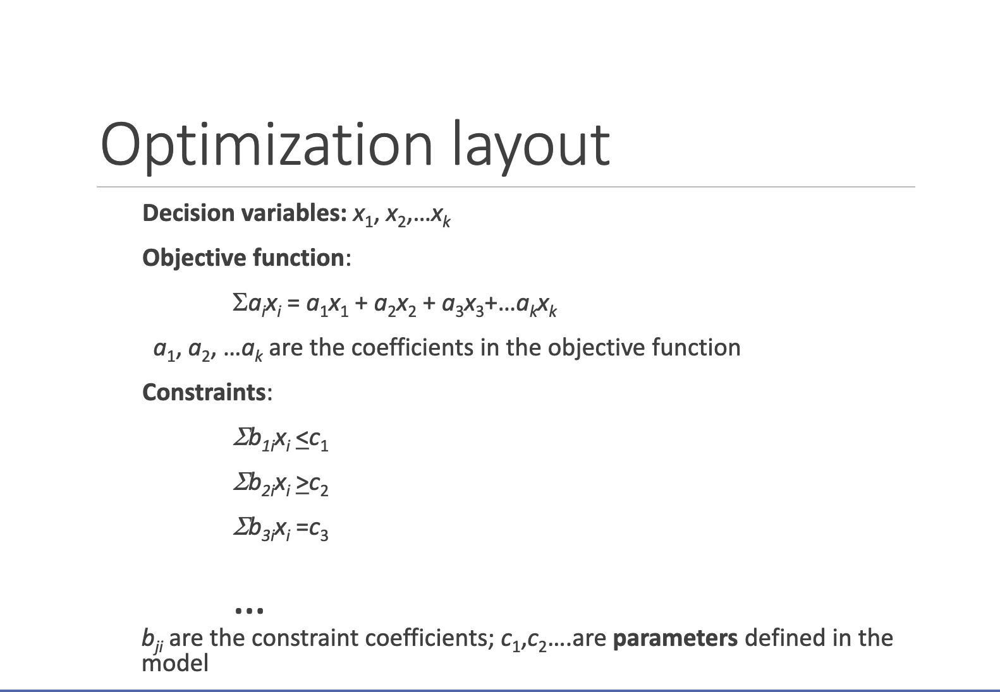
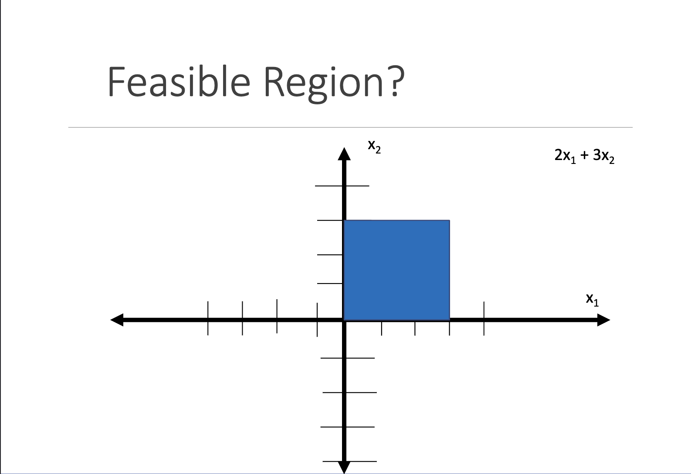
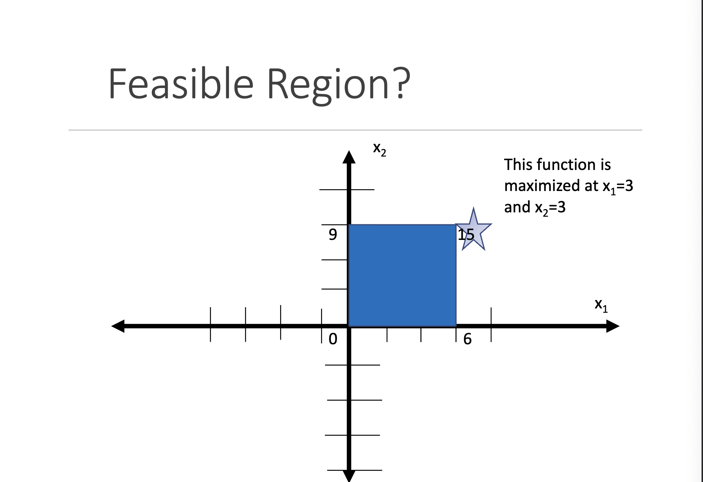

In the mathematical sciences, optimization is trying to find the maximum or minimum a function can take. The goal is to find out what values of the “decision variables” (input variables) optimize the function.
1.1 Terminology
Decision variables: Input variables in which we can change to optimize a function.
Objective function: Function in which we are trying to optimize. A function of the decision variables.
Constraints: Functions of the decision variables that define the constraints of the problems.
Parameters: Values inherent in the problem that we are not able to control.

Figure 1: Optimization Layout
1.2 Outputs from an Optimization
No optimization exists.
More than one solution exists.
There exists one unique solution to the problem.
Other possibilities, but these are the most recognized.
1.3 Types of Optmization Problems
Linear programming: Objective function and constraints are linear.
Integer linear programming: Objective function and constraints are linear, but decision variables MUST be integers.
Mixed integer linear programming: Same as ILP but only some decision variables are restricted to integers.
Non-linear programming: Objective functions and constraints are continuous, but not all are linear.
2 Linear Programming
The feasible region is a region defined by our constraints. Think of this as the space of possible arrangements of our decision variables.
Easiest solutions for solving a linear programming problem is the simplex method.
2.1 Example
Decision variables:
\[
x_1, x_2
\]
Objective function:
\[
2x_1 + 3x_2
\]
Constraints:
\[
0 \leq x_1 \leq 3
\]
\[
0 \leq x_2 \leq 3
\]

Figure 2: Feasible Region Example

Figure 3: Feasible Region with Simplex
Code
from gurobipy import Model, GRB# Create a new modelm = Model("mip1")# Create variablesc = m.addVar(vtype=GRB.CONTINUOUS, lb=0, name="Desk")d = m.addVar(vtype=GRB.CONTINUOUS, lb=0, name="Desk")t = m.addVar(vtype=GRB.CONTINUOUS, lb=0, name="Table")# Set objectivem.setObjective(15* c +24* d +18* t, GRB.MAXIMIZE)# Add constraintsm.addConstr(4* c +6* d +2* t <=1850, "c0")m.addConstr(3* c +5* d +7* t <=2400, "c1")m.addConstr(3* c +2* d +4* t <=1500, "c2")m.addConstr(c <=360, "c3")m.addConstr(d <=300, "c4")m.addConstr(t <=100, "c5")m.optimize()for v in m.getVars():print(f"{v.varName}{v.x}")print(f"Obj: {m.objVal}")
Restricted license - for non-production use only - expires 2025-11-24
Gurobi Optimizer version 11.0.0 build v11.0.0rc2 (mac64[arm] - Darwin 23.2.0 23C71)
CPU model: Apple M2 Pro
Thread count: 12 physical cores, 12 logical processors, using up to 12 threads
Optimize a model with 6 rows, 3 columns and 12 nonzeros
Model fingerprint: 0x59066be2
Coefficient statistics:
Matrix range [1e+00, 7e+00]
Objective range [2e+01, 2e+01]
Bounds range [0e+00, 0e+00]
RHS range [1e+02, 2e+03]
Presolve removed 3 rows and 0 columns
Presolve time: 0.00s
Presolved: 3 rows, 3 columns, 9 nonzeros
Iteration Objective Primal Inf. Dual Inf. Time
0 1.6650000e+04 8.046875e+02 0.000000e+00 0s
1 8.4000000e+03 0.000000e+00 0.000000e+00 0s
Solved in 1 iterations and 0.00 seconds (0.00 work units)
Optimal objective 8.400000000e+03
Desk 0.0
Desk 275.0
Table 100.0
Obj: 8400.0